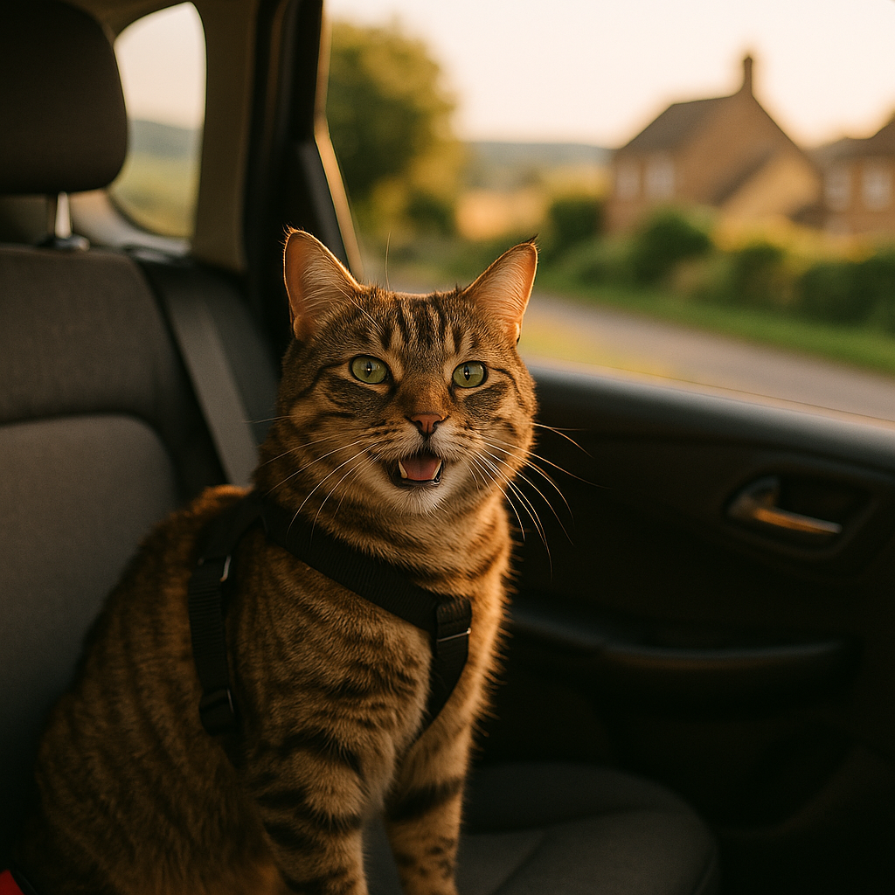
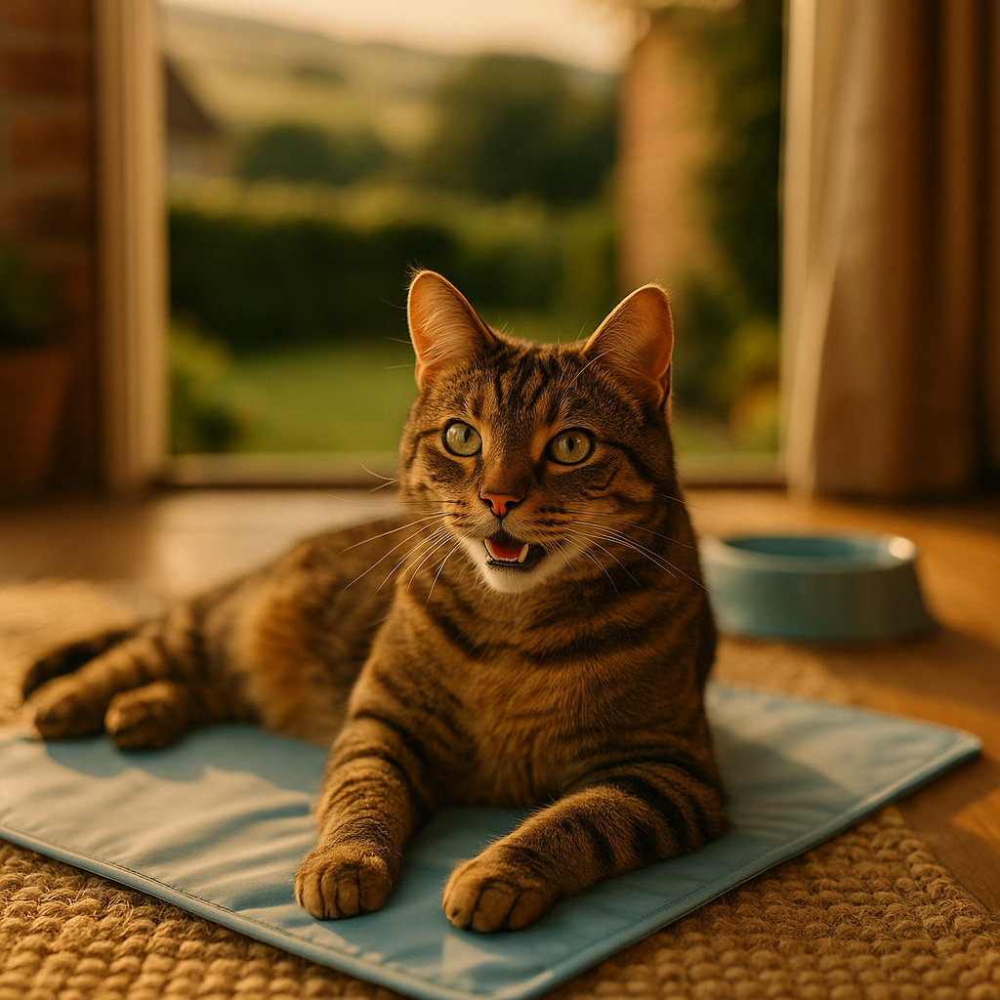
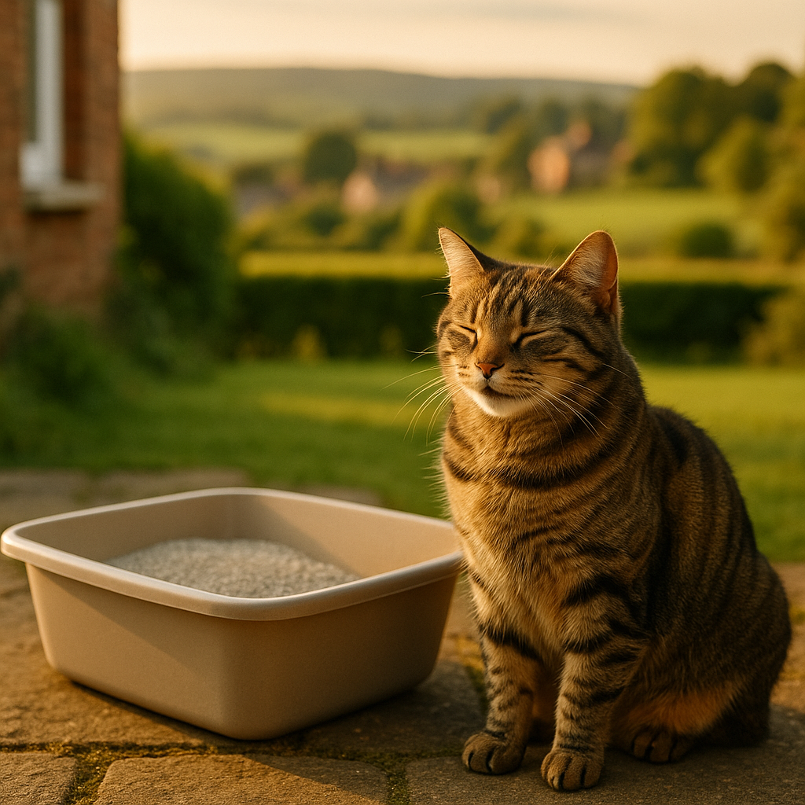
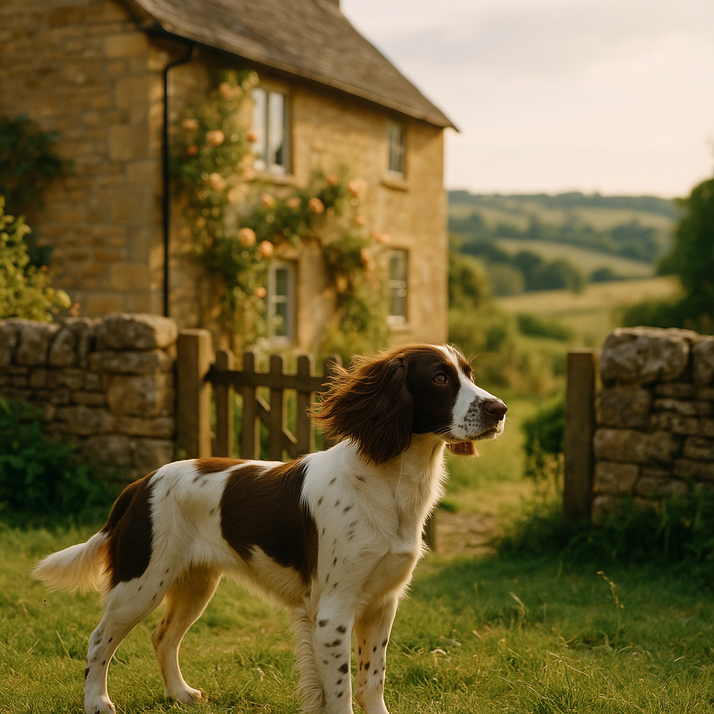
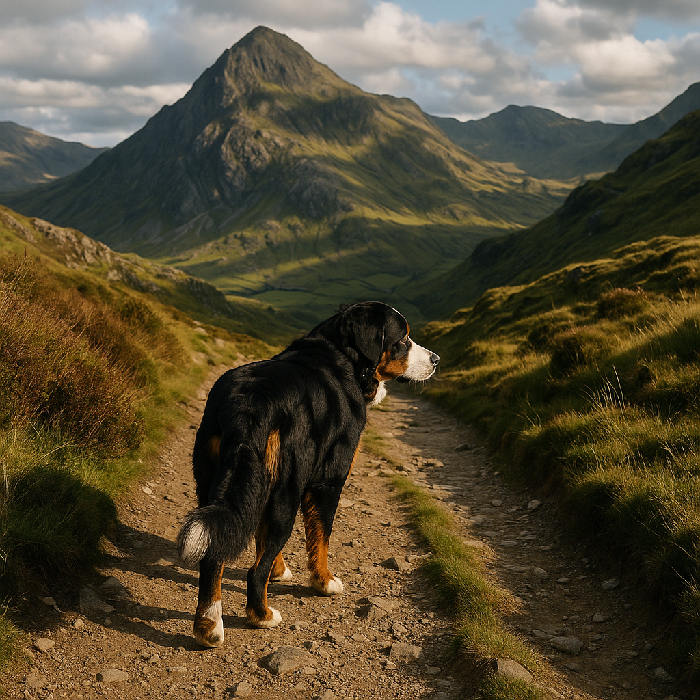

Gear & Tech
Reviews of pet technology, GPS trackers, activity monitors, and gear recommendations for UK pet owners.
About This Category
We provide expert, independent guides on this topic for UK pet owners. Every guide is researched from real UK experiences, pricing, and recommendations — no sponsorship, no fluff.

Keep Dogs & Cats Busy During Fireworks: Best Enrichment Toys, Chews & Safe Dens for Bonfire Night UK
Discover the best enrichment toys, lick mats, long-lasting chews and safe den setups to keep dogs and cats calm and occupied during fireworks.

Best Calming Products for Pets UK 2026: Adaptil, Feliway, Thunder Shirts Compared
Compare top calming products for anxious dogs and cats in the UK including Adaptil, Feliway, thunder shirts and supplements.

Best Reflective and LED Gear for Dog Walks in the Dark UK 2026
Keep your dog visible and safe on dark autumn and winter walks with our guide to the best reflective collars, leads, harnesses and LED lights.

Best Automatic Cat Feeders for Wet Food UK 2026: Compared and Ranked
Leaving wet food out all day is a hygiene risk. These automatic cat feeders keep portions fresh and your cat on schedule.

Travelling with Pets in the UK: Car Safety, Train and Ferry Guide 2026
Complete guide to safe pet travel by car, train and ferry in the UK. Includes carriers, restraints, regulations and top tips.

Best Cooling Products for Pets UK 2026: Mats, Vests & Bowls Compared
Compare the best cooling mats, vests and water bowls to keep your dog and cat comfortable during UK heatwaves and summer.

Best Cat Litter UK 2026: Clumping, Silica and Biodegradable Tested
We tested clumping, silica and eco litters so you can find the best cat litter for your home and your cat's preferences.

Best Pet-Friendly Holiday Cottages UK (2026): Dog-Friendly Stays Compared
Compare the UK's best dog-friendly holiday cottages. Fenced gardens, pet policies, provider pricing, and regional picks for Scotland, Lake District, Cornwall, and Wales.
Dog-Friendly Cottages Scotland: Best Stays, Walks & Beaches
Highland retreats, lochside cottages, and empty beaches. The best dog-friendly stays in Scotland with walks, pubs, and booking tips.
Dog-Friendly Cottages Lake District: Fells, Lakes & Cosy Pubs
Fell walks, lakeside trails, and dog-friendly pubs with fires. The best pet-friendly stays in the Lake District.
Dog-Friendly Cottages Cornwall: Coastal Paths & Sandy Beaches
Year-round dog beaches, coastal path walks, and the best pet-friendly stays in Cornwall.

Dog-Friendly Cottages Wales: Mountains, Coast & Countryside
Snowdonia peaks, Pembrokeshire beaches, and Brecon Beacons waterfalls. The best dog-friendly cottage stays in Wales.
Best Dog GPS Tracker UK: PitPat vs Tractive vs Apple AirTag
Compare GPS trackers, activity monitors, and Apple AirTag for dogs. Feature comparison, battery life, subscription costs, and real-world performance.
Find Trusted Providers
All the brands we recommend in this category have been verified for UK customers and offer good value.
Learn about our affiliate approach →